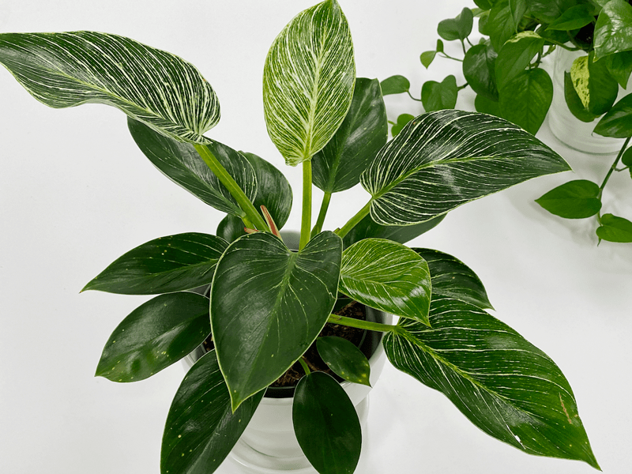
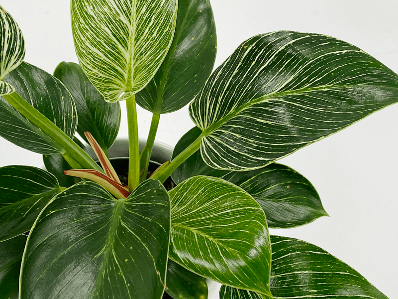
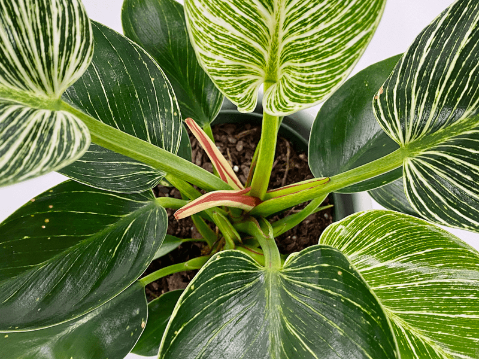
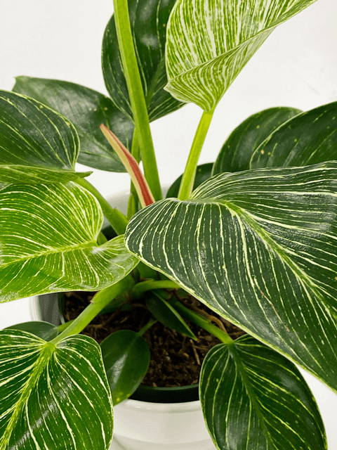
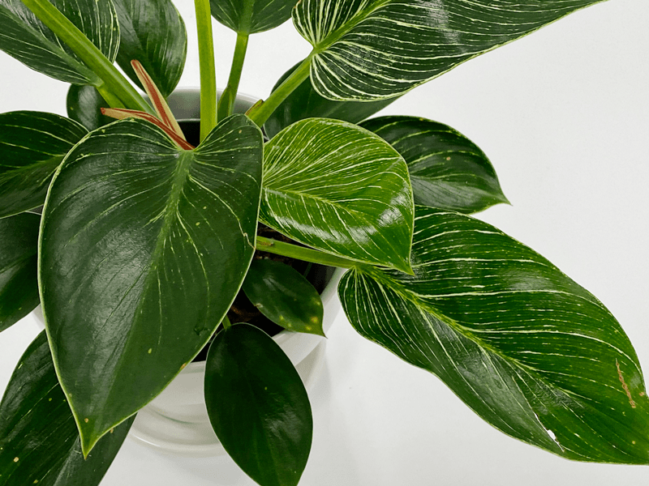

Philodendron Birkin | Care Difficulty – Easy
Philodendron birkin is a stunning plant variety that develops pure white pinstripes on its foliage, growing ever more variegated as the plant matures. Their unique variation shifts from leaf to leaf, and it is not uncommon to notice occasional splashes of pink or light red on new leaves as they unfurl. How many of you sit and stare at a leaf in anticipation of unfurling? I know it can take days or even weeks for this to happen, but it never stops me from looking at them with googly eyes!

This particular plant came into my fold as a lovely gift from my husband. I had been dealing with a health issue and was under the weather. You know that lovestruck look that people get in their eyes in romance movies? That was me as he extended his arms out in front of him, presenting this gorgeous plant to me. After all these years, he still knows how to make me swoon. Much to my delight, Bob loves being surrounded by all the houseplants as much as I do. Well, not to the point of being willing to water them all the time, but he helps me with a smile on his face whenever I ask. I have found that the more I include him in tasks such as repotting or cleaning off pests, the more he is invested in our plants.
This is a somewhat smaller, non-vining Philodendron with an upright growth habit. So if you are looking for a plant to adorn your desk, coffee table, or any flat surface, this plant would be a lovely choice. Their leaves can reach up to 7″ long and the plant itself grows between 1-3 feet tall.

Lighting Requirements
Philodendron birkin performs best in bright, indirect light, protected from the direct rays of the sun, BUT they can handle lower lighting as well. The risk of placing them in a lower-light area is that the leaves won’t be as colorful as they could be.
Water Requirements
These easy-care plants like to dry out a bit between waterings and will sulk if forced to grow in wet soil. I like to let the soil almost dry out (not completely), then take the plant to the sink and water until the water starts dripping out of the bottom drainage holes. Once the water stops dripping, I return it to its cover pot.
Fertilizer / Plant Food
I feed my plants on a regular basis during spring and summer, especially when new leaves are growing. During the winter, feeding can take place every other month. I like to heavily dilute my fertilizer so it’s safe to feed my plants every time I water them. But you don’t have to do this; follow the directions on the fertilizer that you use, and feed accordingly.
Temperature & Humidity Requirements
These plants are very tolerant of temperate environments, but it’s best not to expose them to frosty or excessively hot temperatures. So, let’s keep them between 60-75 (F) to avoid any damage. Regarding humidity, I find that it does well in a standard home. But there are certain times of the year when my home becomes dry–when it’s really cold or hot outside. When these temps come around, I fire up my humidifier for good measure.
Soil Requirements
These sweet plants prefer a well-draining potting medium that is rich in a bark/peat-based soil which is not too heavy. It needs to retain moisture, but not hold water. Instead of bark, you can also use pumice stones or perlite.
Additional Care
- Like all plants, they need their leaves cleaned for photosynthesis in order to feed themselves. It’s a good habit to regularly wipe your plants leaves with a damp soft cloth or give them a full shower every now and again to remove any dust that has accumulated. This will also ensure a healthy, pest-free plant. If you want to see how I clean my plant leaves, click (here) to learn more.

Plant Characteristics to Watch For
Diagnosing what is going wrong with your plant is going to take a little detective work, but even more patience! First of all, don’t panic and don’t throw out a plant prematurely. Take a few deep breaths and work down the list of possible issues. Below, I am going to share some typical symptoms that can arise. When I start to spot troubling signs on a plant, I take the plant into a room with good lighting, pull out my magnifiers, and begin by thoroughly inspecting the plant.

The edges of the leaves are yellowing.
- If the edges of the leaves are yellowing, it can indicate that the plant has been overwatered.
- Solution: It’s time to assess your watering patterns.
- To combat this, make sure that you water the plant only once the top 2-3″ of the soil is dry. When it’s time to water again, take the plant to the sink and water it until it starts dripping from the drainage holes. Once it stops dripping, return it to the cover pot. Both you and the plant are now ready for a fresh start! If there is a saucer collecting drained water underneath the pot, make sure you empty it.
The WHOLE leaf is yellowing!
- If the whole leaf is yellowing, this is another possible sign that you may have been overwatering. When this happens, the soil tends to become waterlogged and the roots suffocate, ultimately leading to root rot if not caught in time. This can reduce the efficiency of the plant to maintain its health, resulting in yellow leaves.
- Solution: See above, “The edges of the leaves are yellowing.”
The leaves are curling.
- The leaves can curl as a result of excessively cold and dry environments. Excessively cold spaces can occur during winter as well as in the summer when we run the air conditioning. Both of these conditions can lead to drier air.
- Solution: Access the plant’s home. Does it receive a draft of cold or hot air from a doorway, window, or air conditioner, or heater? If so, relocate it. If you feel that the plant is in a good location, safe from extreme temperatures, it might need more humidification. I personally use the LEVOIT Humidifier, which can easily handle spaces as large as 753 sq ft.
The leaves are turning brown.
- Browning leaves can result from a lack of humidity.
- Solution: Upping the humidity can be done by either running a room humidifier or placing the plant in a pebble tray filled with water.
Yikes, the new leaves don’t have any variegation.
- There is no need to panic if the new leaves of your plant aren’t variegated. These beautiful markings make their appearance as they mature.
- Solution: Patience, my friend, patience.
My plant is growing a strange “flower.”
- Even though flowers are not its primary feature, these plants can grow flowering spathes as they mature.
- Solution: Rejoice and embrace these beauties. Not only are these flowers a sign of maturity, but they are also a sign that they are living in the perfect conditions. Congrats!
Common Bugs to Watch For
If you want to have healthy houseplants, you MUST inspect them regularly. Every time I water a plant, I give it a quick look-over. Bugs/insects feeding on your plants reduces the plant sap and redirects nutrients from leaves. Some chew on the leaves, leaving holes in the leaves. Also watch for wilting or yellowing, distorted, or speckled leaves. Pests can quickly get out of hand and spread to your other plants.
IF you see ONE bug, trust me, there are more. So, take action right away. Some are brave enough to show their “faces” by hanging out on stems in plain sight. Others tend to hide out in the darnedest of places, like the crotch of a plant or in a leaf that has yet to unfurl.
- Mealybugs look like small balls of cotton. They can travel, slowly, but they have a strong will and determination! Though they are slow-moving, if any plant is touching another, there is a chance the mealybug will hitch a ride on a new leaf and spread. They breed like rabbits of the insect world. Females can deposit around 600 eggs in loose cottony masses, often on the underside of leaves or along stems.
- Aphids are more commonly seen if you place your plants outdoors. Aphids are indeed bugs. They are tiny insects that, along with black, also come in shades of yellow, green, brown, and pink. They are often found on the undersides of leaves.

Toxicity
Philodendron birkin plants contain a crystal called calcium oxalate. Make sure that you keep the plant away from your children and pets.
© AmieSue.com